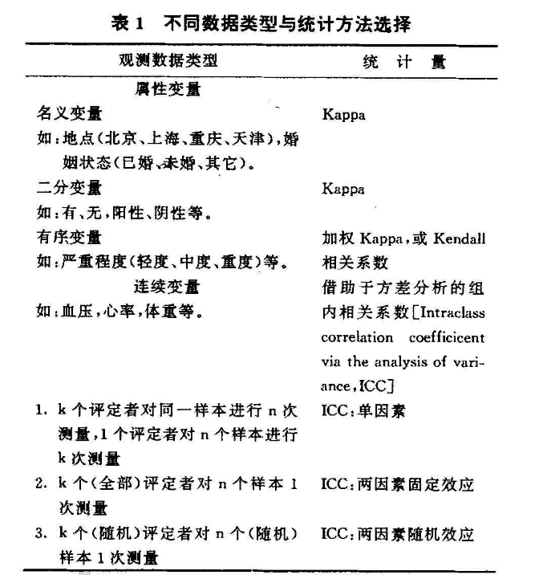
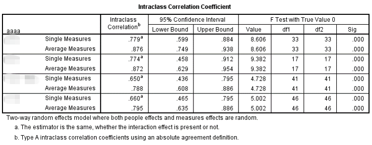

随着信息科技的高速发展，互联网让人与人之间的通信成本不断降低，同时通信效率不断提升。在这一浪潮下，传统的发收问卷的形式瞬间有所改善，让问卷的发生和回收更为高效。
于是乎，各行各业的问卷数据呈现蓬勃发展的趋势，尤其是QQ这种互联网大佬，动不动就让你填个调查问卷什么的。当然也有良心企业如，问卷星。
已经完全跑题了，也不补救了，反正今天的话题和问卷多少有点关系。是关于多个评分者打分一致性的问题。以下进入正文。
一致性与相关性
在具体讲算法之前，我们需要先对一致性和相关性的概念加以区分，为什么这么说呢？因为在很多时候，我们在一致性分析的时候通常不会考虑太多，直接采用相关系数的方法进行计算，那么这种做法对不对呢？
其实不能算全错，而是在有些条件下并不适用。可以先看看以下图表。
这里模拟了两位评价者对6名被试的打分情况，分值区间为0-100：
| 被评价者 | 评分者A | 评分者B |
|---|---|---|
| 样本1 | 10 | 80 |
| 样本2 | 11 | 81 |
| 样本3 | 12 | 82 |
| 样本4 | 13 | 83 |
| 样本5 | 14 | 84 |
| 样本6 | 15 | 85 |
如果按照相关的方法，有且仅有两个对象情况下，我们可以使用散点图的形式表达，如下：
图1 评分者散点图在这种情况下：R²=1 ！！！
是啊，这两个评分者在这个图形上的所有点都落在了一条直线上。但是，似乎有什么不对？
那就再看看下一个图。
图2 评分者柱状图是不是突然有种沃德法克的感觉？
实际上，这两位只是对不同样本的好坏评价程度比较一致，但是在打分的严格程度方面，完全不一样啊。
评价者A典型的“目中无人”，大约他的心理独白是：就你们这群战斗力只有5的渣渣，不打0分己经很给面子了好么？
评价者B就是典型的“中国式打分砖家”，大约他的心理独白是：100分啊，那就给个80分左右吧。
所以，上面说了一大摞，只是单纯地想告诉大家一个事实：相关性和一致性是不一样的。
相关性通常应用在不同量纲、不同单位的数据中，比如身高和体重。
一致性则用于在所有其他条件均相同，仅参与评价的人员不同的情况下。
那么，不同评分者之间应该采用何种统计方法计算其一致性呢？
推荐这样一张表（具体见Reference）
图3 一致性检验统计方法选择表总体而言，0,1变量就考虑Kappa；等级变量考虑Kendall或者加权Kappa；连续变量则考虑ICC
绕了半天，故事的主角ICC终于出现了，以下浸入正片环节。
ICC概念
ICC的全称是intraclass correlation coefficient，即组内相关系数。有好事的小伙伴肯定又要吐槽了：这不还是相关系数吗？？？
此处我只能偷偷告诉你，对啊，就是相关系数，但是不是相关性啊。而且，它叫组内相关系数。
一般到这里都会用公式解释ICC和普通的相关系数（一般是pearson）的区别，但是作为坚决不爱贴公式的人，我推荐把文章拉到底，点Reference下的第二个链接。
实际上，要理解ICC关键在于，首先你要确定你的研究对象的性质。先引用一段：
选择恰当的ICC取决于 以下三个方面：（1）所选的模型是one-way model或two-way model；（2）选择single measure或average measure；（3）选择absolute agreement或consistency。
如果用SPSS的话，这三个选项都是不可避免的：
实际上，ICC使用并不那么艰难，但是在理解这三个概念上要花费大量的时间。
因此，我根据我在操作中的实际经验简单讲一下。
- one-way or two-way？
one-way是单因素随机效应模型，即单因素方差模型，其自变量为每个样本，因变量为得分。整体上，这个方式适用于【每个被试者由不同的随机选择的评定者评分】或【所有被试者由一个评定者评分】。
two-way是双因素随机效应模型，即双因素方差模型，其自变量为每个样本以及不同的评价者，因变量为得分。整体上，这个方式适用于【重测信度】或【多评分者的一致性】。
另外，补充一点：two-way模型分为随机效应（random）和混合效应（mixed），前者计算的结果可推广到所有可能的评定者，后者仅限于当前的评分者不可推广。 - single measure or average measure？
single measure分析单个评分者评分的可靠性。
average measure则使用了多个评分者的均值进行可靠性研究。在双因素模型中的average measure ICC等于Cronbach's α系数 - absolute agreement or consistency？
absolute agreement是考虑了不同评定者存在不同的系统误差，也即评分者之间打分的严格程度并不一致。
consistency是认为不同评分者水平一致的一致性系数计算方式，不考虑由不同评分者自身带来的系统误差。
最后，ICC的区间是[0,1]，所以，有人建议ICC大于0.80为高度一致、0.61-0.80为中等，0.41-0.60为一般，0.11-0.40为较低，小于0.1为无一致性。
ICC应用
我知道的，不拿点干货出来是没法让大家满足的。而且，老实说，上文的内容比较枯燥乏味。
所以，我这里结合具体的项目研究来展开。项目背景就是一次对不同学校的评分。其中有两项是相同的两个评价者在不同指标上的评价结果。这里使用的统计软件是SPSS。
首先，数据录入。就不多讲了。
然后，点击【分析】-【度量】-【可靠性分析】，选择变量后点击【统计量】，勾选【同类相关系数】，模型使用【双向随机】，类型为【绝对一致】，如下图
图4 SPSS的ICC对话框点击【继续】、选择需要统计的变量，点击【确定】，即刻呈现结果：

简单的解读下结果，可以看到这个两个变量在不同的分组内出现了不同的结果，在第一、第三和第四个组的一致性非常低，并且没有达到统计上的显著水平（p>0.05）；仅第二组的一致性稍高,也达到统计上的显著水平（p<0.05）。所以，除了第二组外，其他几组的评分者一致性都存在疑问。
当然，教完你们用这个工具还没完，上文提到了，是相同评价者在不同指标的评价结果，所以，有趣的结论就出现了：

图6 SPSS的ICC统计结果（另一个指标）这个指标上，两个相同的评价者在不同的组别间均出现了较高的一致性，也都达到了统计上的显著水平（p<0.05）。
简单来说，就是某一专家小组的两位成员在一个方面达成了共识，但是另一个方面出现了较大的分歧。那么究竟是什么原因导致了这一结果呢？值得深思啊...
结束语：
大体上，这一期和大家分享了关于一致性的计算和研究。当然，并不能说文章就无懈可击了，依然还有很多值得深入研究的地方，毕竟在文章分的副标题上可是放了一个“概化理论”的头衔。那玩意儿可是在评分者一致性研究领域中的一朵大（qi）咖（pa）。所以，如果要深入研究，不妨可以考虑往这个方向。
另外，在一致性的研究中，Rwg也是个课题，就不作为这一期的主要内容了。
回过头来，仔细思考之前做的一些统计研究，其实还存在着很多并不完善的地方。并不是那些都是错的，只能说是不够准确，但是，不能一直将错就错下去了，不断地学习和自我纠正才是成长的标志。毕竟，这辈子，不犯错还能称之为“人类”么？
Reference
豆丁网：一致性检验方法的合理应用
百度文库：组内相关系数及其软件实现
豆丁网：ICC值在量表信度分析中的应用